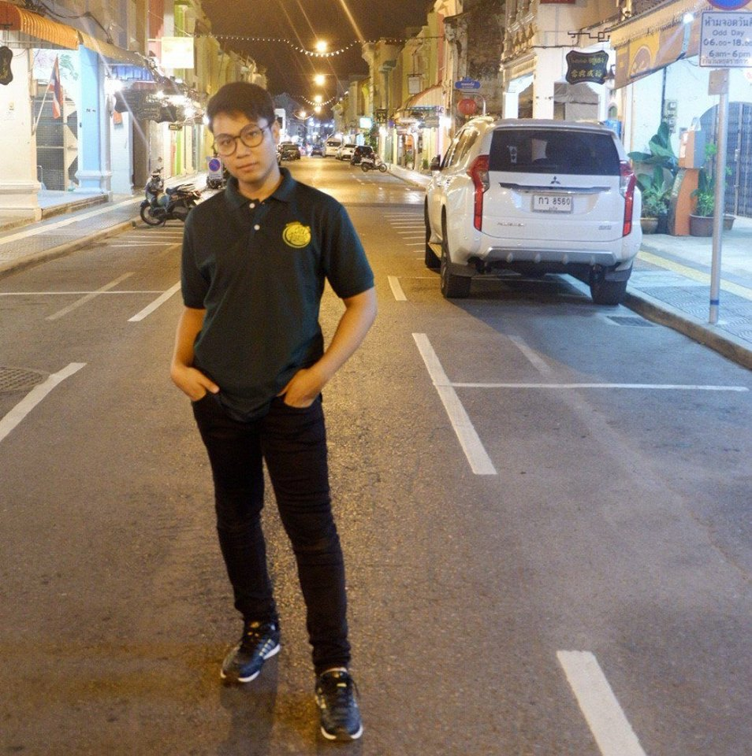
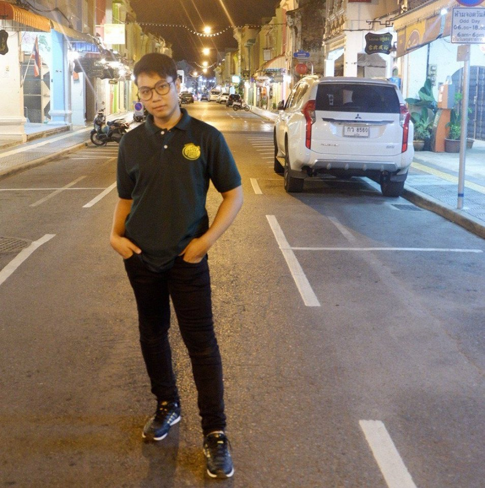

When one door closes, another opens;
but we often look so long and so regretfully upon the closed-door that we do not see the one that has opened for us.
by Alexander Graham Bell
เมื่อประตูบานหนึ่งปิดลง อีกบานหนึ่งย่อมถูกเปิดออก
แต่เรามักเฝ้าอาวรณ์และเสียดาย กับประตูที่ถูกปิดลงไป
จนทำให้มองไม่เห็นว่ายังมีประตูอีกบานที่เปิดอ้าออกเพื่อเรา
โดย อเล็กซานเดอร์ เกรแฮม เบล
SOFTWARE ENGINEERING OF FACULTY TECHNOLOGY AND ENVIRONMENT AT PRINCE OF SONGKLA UNIVERSITY PHUKET CAMPUS
| |
 |